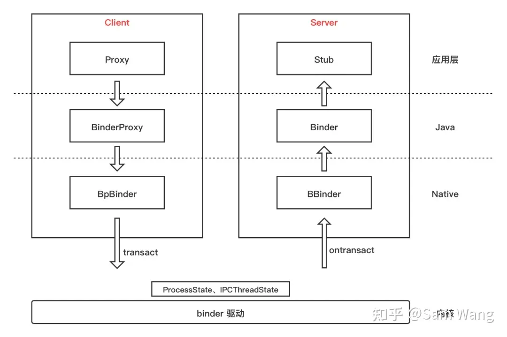
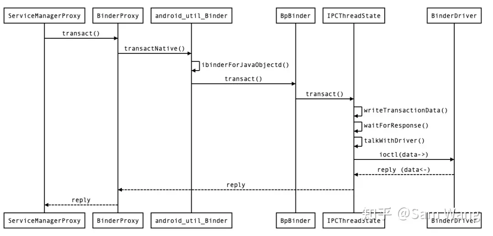

Binder IPC 过程中常用的对象和类
Summary



client 端
BpBinder
client native proxy，客户端 native 层的 binder ipc 代理（IBinder），它最重要的是持有 server 端句柄 handle，handle == 0 表示 service manager，其他的需要通过 service manager 查询得到，参看 AMS的例子
// BpBindere 会直接用 server handle 调用 IPCThreadState::transact() 与 binder driver 进行通讯
BpBinder::transact
--IPCThreadState::self()->transact(binderHandle() /* 0 */, code, data, reply, flags)
----IPCThreadState::writeTransactionData(BC_TRANSACTION, flags, handle, code, data, nullptr)
----IPCThreadState::waitForResponse(Parcel *reply, status_t *acquireResult)
------IPCThreadState::talkWithDriver(bool doReceive)
--------ioctl(mProcess->mDriverFD, BINDER_WRITE_READ, &bwr)BinderProxy
client java proxy，客户端 java 层的 binder ipc 代理（IBinder），是 BpBinder 在 java 层的体现，参看 AMS的例子
IActivityManager.Stub.asInterface(IBinder)
client 通过此方法获得一个实现了 IActivityManager 的代理，IBinder 可以是 Stub 子类（本地），也可以是 BinderProxy（IPC）
IServiceManager.Stub.Proxy
它实现了契约接口 IServiceManager，需要一个 BinderProxy 作为底层实现，它将参数打包为 Parcel 交由 BinderProxy 处理，并从 BinderProxy 返回的 Parcel 里读取返回值，参看 AMS的例子
server 端
IActivityManager.Stub extends android.os.Binder
server java impl，server 端对契约接口的实现继承自 Stub 类（IBinder），实现约定好的业务方法（java 层）
BBinder & JavaBBinder
server native ref，server 端的业务实现 Stub 类在 native 层的体现（IBinder），Binder.mObject 指向 native 层的 JavaBBinderHolder，从 holder 可以获取 JavaBBinder（BBinder 的子类），binder ipc 序列化 IBInder 时，如果是 BpBinder 则写入 handle 即可，如果是 BBinder 则写入此对象的地址，那么 server 端在收到 RPC 请求时就可以通过对象地址找到 BBinder -> JavaBBinder -> Stub 类 -> 调用指定的方法，参看 AMS的例子
其他
IActivityManager
约定了 client 与 server 之间数据交互（RPC）的契约（contract）的 java interface
ServiceManager
server 通过它进行服务注册 addService(String name, IBinder service)，client 通过他获得通讯句柄 getService(String name)
ProcessState
进程内单例，负责打开 binder driver 文件描述符，并进行 mmap 操作
IPCThreadState
线程私有（ThreadLocal），负责与 binder driver 通讯，实现了 binder ipc 大部分的底层逻辑，它有很多种使用方式：
1，IPCThreadState::transact(int32_t handle, uint32_t code, const Parcel& data, Parcel* reply, uint32_t flags)
最简单、最常用的方式，需要一个从 service manager 获取的 server 端句柄，直接向 server 端发送请求并等待响应
2，IPCThreadState::handlePolledCommands()
当 binder fd 上有事件发生时调用此方法让 IPCThreadState 处理 binder driver 过来的数据，参见 service manager 处理 binder 消息的循环
3，IPCThreadState::joinThreadPool(bool isMain)
使当前线程进入 talkWithDriver() + executeCommand(mIn.readInt32()) 的消息处理循环
4，ProcessState::startThreadPool()
则会开一个新线程执行消息处理循环（ProcessState 是进程内单例所以只会开一个消息循环线程），参见 Zygote & system server
ProcessState
- 打开 binder driver 文件描述符
open("/dev/binder") - 进行初始化操作
ioctl：版本校验BINDER_VERSION、设置默认线程数量DEFAULT_MAX_BINDER_THREADS等 - 初始化所需内存空间 mmap
// https://cs.android.com/android/platform/superproject/+/master:frameworks/native/libs/binder/ProcessState.cpp
sp<ProcessState> ProcessState::self()
{
return init(kDefaultDriver /* /dev/binder */, false /*requireDefault*/);
}
// ProcessState 是全局单例模式（gProcess）
sp<ProcessState> ProcessState::init(const char *driver, bool requireDefault)
{
if (driver == nullptr) {
std::lock_guard<std::mutex> l(gProcessMutex);
if (gProcess) {
verifyNotForked(gProcess->mForked);
}
return gProcess;
}
[[clang::no_destroy]] static std::once_flag gProcessOnce;
std::call_once(gProcessOnce, [&](){
if (access(driver, R_OK) == -1) {
ALOGE("Binder driver %s is unavailable. Using /dev/binder instead.", driver);
driver = "/dev/binder";
}
// we must install these before instantiating the gProcess object,
// otherwise this would race with creating it, and there could be the
// possibility of an invalid gProcess object forked by another thread
// before these are installed
int ret = pthread_atfork(ProcessState::onFork, ProcessState::parentPostFork,
ProcessState::childPostFork);
LOG_ALWAYS_FATAL_IF(ret != 0, "pthread_atfork error %s", strerror(ret));
std::lock_guard<std::mutex> l(gProcessMutex);
gProcess = sp<ProcessState>::make(driver);
});
if (requireDefault) {
// Detect if we are trying to initialize with a different driver, and
// consider that an error. ProcessState will only be initialized once above.
LOG_ALWAYS_FATAL_IF(gProcess->getDriverName() != driver,
"ProcessState was already initialized with %s,"
" can't initialize with %s.",
gProcess->getDriverName().c_str(), driver);
}
verifyNotForked(gProcess->mForked);
return gProcess;
}
// 构造 ProcessState 的时候就会打开 binder：open("/dev/binder") && mmap
// http://www.aospxref.com/android-13.0.0_r3/xref/frameworks/native/libs/binder/ProcessState.cpp#ProcessState
ProcessState::ProcessState(const char* driver)
: mDriverName(String8(driver)),
mDriverFD(-1),
mVMStart(MAP_FAILED),
mThreadCountLock(PTHREAD_MUTEX_INITIALIZER),
mThreadCountDecrement(PTHREAD_COND_INITIALIZER),
mExecutingThreadsCount(0),
mWaitingForThreads(0),
mMaxThreads(DEFAULT_MAX_BINDER_THREADS),
mStarvationStartTimeMs(0),
mForked(false),
mThreadPoolStarted(false),
mThreadPoolSeq(1),
mCallRestriction(CallRestriction::NONE) {
base::Result<int> opened = open_driver(driver);
if (opened.ok()) {
// mmap the binder, providing a chunk of virtual address space to receive transactions.
mVMStart = mmap(nullptr, BINDER_VM_SIZE, PROT_READ, MAP_PRIVATE | MAP_NORESERVE,
opened.value(), 0);
if (mVMStart == MAP_FAILED) {
close(opened.value());
// *sigh*
opened = base::Error()
<< "Using " << driver << " failed: unable to mmap transaction memory.";
mDriverName.clear();
}
}
if (opened.ok()) {
mDriverFD = opened.value();
}
}
static base::Result<int> open_driver(const char* driver) {
int fd = open(driver, O_RDWR | O_CLOEXEC);
if (fd < 0) {
return base::ErrnoError() << "Opening '" << driver << "' failed";
}
int vers = 0;
status_t result = ioctl(fd, BINDER_VERSION, &vers);
if (result == -1) {
close(fd);
return base::ErrnoError() << "Binder ioctl to obtain version failed";
}
if (result != 0 || vers != BINDER_CURRENT_PROTOCOL_VERSION) {
close(fd);
return base::Error() << "Binder driver protocol(" << vers
<< ") does not match user space protocol("
<< BINDER_CURRENT_PROTOCOL_VERSION
<< ")! ioctl() return value: " << result;
}
size_t maxThreads = DEFAULT_MAX_BINDER_THREADS;
result = ioctl(fd, BINDER_SET_MAX_THREADS, &maxThreads);
if (result == -1) {
ALOGE("Binder ioctl to set max threads failed: %s", strerror(errno));
}
uint32_t enable = DEFAULT_ENABLE_ONEWAY_SPAM_DETECTION;
result = ioctl(fd, BINDER_ENABLE_ONEWAY_SPAM_DETECTION, &enable);
if (result == -1) {
ALOGE_IF(ProcessState::isDriverFeatureEnabled(
ProcessState::DriverFeature::ONEWAY_SPAM_DETECTION),
"Binder ioctl to enable oneway spam detection failed: %s", strerror(errno));
}
return fd;
}IPCThreadState
IPCThreadState 是线程私有的，它依靠全局单例 ProcessState 打开 binder driver 得到 binder fd
pthread_getspecific, pthread_setspecific — thread-specific data management
The pthread_getspecific() function shall return the value currently bound to the specified key on behalf of the calling thread.
The pthread_setspecific() function shall associate a thread-specific value with a key obtained via a previous call to pthread_key_create(). Different threads may bind different values to the same key.
// https://cs.android.com/android/platform/superproject/+/master:frameworks/native/libs/binder/BpBinder.cpp
status_t BpBinder::transact(
uint32_t code, const Parcel& data, Parcel* reply, uint32_t flags)
{
// ...
status_t status;
if (CC_UNLIKELY(isRpcBinder())) {
status = rpcSession()->transact(sp<IBinder>::fromExisting(this), code, data, reply,
flags);
} else {
if constexpr (!kEnableKernelIpc) {
LOG_ALWAYS_FATAL("Binder kernel driver disabled at build time");
return INVALID_OPERATION;
}
// binderHandle() 是 server 句柄，比如 servicemanager 就是 0
// IPCThreadState::self() 返回线程本地/线程私有的 IPCThreadState 实例
status = IPCThreadState::self()->transact(binderHandle(), code, data, reply, flags);
}
// ...
}
// IPCThreadState 是线程私有的
// https://cs.android.com/android/platform/superproject/+/master:frameworks/native/libs/binder/IPCThreadState.cpp
IPCThreadState* IPCThreadState::self()
{
if (gHaveTLS.load(std::memory_order_acquire)) {
restart:
const pthread_key_t k = gTLS;
IPCThreadState* st = (IPCThreadState*)pthread_getspecific(k);
if (st) return st;
return new IPCThreadState;
}
// ...
}
// https://cs.android.com/android/platform/superproject/+/master:frameworks/native/libs/binder/IPCThreadState.cpp
IPCThreadState::IPCThreadState()
: mProcess(ProcessState::self()),
mServingStackPointer(nullptr),
mServingStackPointerGuard(nullptr),
mWorkSource(kUnsetWorkSource),
mPropagateWorkSource(false),
mIsLooper(false),
mIsFlushing(false),
mStrictModePolicy(0),
mLastTransactionBinderFlags(0),
mCallRestriction(mProcess->mCallRestriction) {
pthread_setspecific(gTLS, this);
clearCaller();
mIn.setDataCapacity(256);
mOut.setDataCapacity(256);
}
// http://www.aospxref.com/android-13.0.0_r3/xref/frameworks/native/libs/binder/IPCThreadState.cpp
status_t IPCThreadState::transact(int32_t handle,
uint32_t code, const Parcel& data,
Parcel* reply, uint32_t flags)
{
// 将 [BC_TRANSACTION][binder_transaction_data] 写入 mOut
// mOut 是 client 进程内的一块内存区域
err = writeTransactionData(BC_TRANSACTION, flags, handle, code, data, nullptr);
// 将 request 发送给 binder driver 并等待 response
err = waitForResponse(reply);
// ...
return err;
}
status_t IPCThreadState::writeTransactionData(int32_t cmd, uint32_t binderFlags,
int32_t handle, uint32_t code, const Parcel& data, status_t* statusBuffer)
{
binder_transaction_data tr;
tr.target.ptr = 0; /* Don't pass uninitialized stack data to a remote process */
tr.target.handle = handle;
tr.code = code;
tr.flags = binderFlags;
tr.cookie = 0;
tr.sender_pid = 0;
tr.sender_euid = 0;
const status_t err = data.errorCheck();
if (err == NO_ERROR) {
tr.data_size = data.ipcDataSize();
tr.data.ptr.buffer = data.ipcData();
tr.offsets_size = data.ipcObjectsCount()*sizeof(binder_size_t);
tr.data.ptr.offsets = data.ipcObjects();
} else if (statusBuffer) {
tr.flags |= TF_STATUS_CODE;
*statusBuffer = err;
tr.data_size = sizeof(status_t);
tr.data.ptr.buffer = reinterpret_cast<uintptr_t>(statusBuffer);
tr.offsets_size = 0;
tr.data.ptr.offsets = 0;
} else {
return (mLastError = err);
}
mOut.writeInt32(cmd);
mOut.write(&tr, sizeof(tr));
return NO_ERROR;
}
// 处理 response
status_t IPCThreadState::waitForResponse(Parcel *reply, status_t *acquireResult)
{
uint32_t cmd;
int32_t err;
while (1) {
if ((err=talkWithDriver()) < NO_ERROR) break;
err = mIn.errorCheck();
if (err < NO_ERROR) break;
if (mIn.dataAvail() == 0) continue;
cmd = (uint32_t)mIn.readInt32();
switch (cmd) {
case BR_FAILED_REPLY:
case BR_FROZEN_REPLY:
case BR_ACQUIRE_RESULT:
case BR_REPLY:
// ...
}
// 将 request 发送给 binder driver 并接收 response
// ioctl(mProcess->mDriverFD, BINDER_WRITE_READ, binder_write_read)
// [write_buffer, write_size] 是 request
// [read_buffer, read_size] 是 response
status_t IPCThreadState::talkWithDriver(bool doReceive)
{
if (mProcess->mDriverFD < 0) {
return -EBADF;
}
binder_write_read bwr;
// Is the read buffer empty?
const bool needRead = mIn.dataPosition() >= mIn.dataSize();
// We don't want to write anything if we are still reading
// from data left in the input buffer and the caller
// has requested to read the next data.
const size_t outAvail = (!doReceive || needRead) ? mOut.dataSize() : 0;
bwr.write_size = outAvail;
bwr.write_buffer = (uintptr_t)mOut.data();
// This is what we'll read.
if (doReceive && needRead) {
bwr.read_size = mIn.dataCapacity();
bwr.read_buffer = (uintptr_t)mIn.data();
} else {
bwr.read_size = 0;
bwr.read_buffer = 0;
}
// Return immediately if there is nothing to do.
if ((bwr.write_size == 0) && (bwr.read_size == 0)) return NO_ERROR;
bwr.write_consumed = 0;
bwr.read_consumed = 0;
status_t err;
do {
if (ioctl(mProcess->mDriverFD, BINDER_WRITE_READ, &bwr) >= 0)
err = NO_ERROR;
else
err = -errno;
if (mProcess->mDriverFD < 0) {
err = -EBADF;
}
} while (err == -EINTR);
// ...
}Zygote & system server
// Main entry of app process.
// https://cs.android.com/android/platform/superproject/+/master:frameworks/base/cmds/app_process/app_main.cpp
int main(int argc, char* const argv[])
{
// ...
bool zygote = false;
while (i < argc) {
const char* arg = argv[i++];
if (strcmp(arg, "--zygote") == 0) {
zygote = true;
niceName = ZYGOTE_NICE_NAME;
// ...
if (zygote) {
runtime.start("com.android.internal.os.ZygoteInit", args, zygote); // 启动虚拟机，并调用 ZygoteInit.main(String argv[])
} else if // ...
}
/**
* 主要做四件事：
*
* 1、注册 socket（通过 socket 让 zygote 进程 fork 出其他 app 进程）
* 2、预加载资源
* 3、启动 system_server
* 4、启动消息循环
*
* This is the entry point for a Zygote process. It creates the Zygote server, loads resources,
* and handles other tasks related to preparing the process for forking into applications
*/
// https://cs.android.com/android/platform/superproject/+/master:frameworks/base/core/java/com/android/internal/os/ZygoteInit.java
public static void main(String[] argv) {
// ...
boolean startSystemServer = false;
for (int i = 1; i < argv.length; i++) {
if ("start-system-server".equals(argv[i])) {
startSystemServer = true;
}
// ...
if (startSystemServer) {
Runnable r = forkSystemServer(abiList, zygoteSocketName, zygoteServer);
// ...
}
// fork 出 system_server 进程并进入其逻辑
private static Runnable forkSystemServer(String abiList, String socketName,
ZygoteServer zygoteServer) {
// ...
/* Request to fork the system server process */
pid = Zygote.forkSystemServer(
parsedArgs.mUid, parsedArgs.mGid,
parsedArgs.mGids,
parsedArgs.mRuntimeFlags,
null,
parsedArgs.mPermittedCapabilities,
parsedArgs.mEffectiveCapabilities);
/* For child process */
if (pid == 0) {
if (hasSecondZygote(abiList)) {
waitForSecondaryZygote(socketName);
}
zygoteServer.closeServerSocket();
return handleSystemServerProcess(parsedArgs);
}
return null;
}
private static Runnable handleSystemServerProcess(ZygoteArguments parsedArgs) {
// ...
/*
* Pass the remaining arguments to SystemServer.
*/
return ZygoteInit.zygoteInit(parsedArgs.mTargetSdkVersion,
parsedArgs.mDisabledCompatChanges,
parsedArgs.mRemainingArgs, cl);
}
/* should never reach here */
}
/**
* The main function called when started through the zygote process. This could be unified with
* main(), if the native code in nativeFinishInit() were rationalized with Zygote startup.
*/
public static Runnable zygoteInit(int targetSdkVersion, long[] disabledCompatChanges,
String[] argv, ClassLoader classLoader) {
// ...
ZygoteInit.nativeZygoteInit();
return RuntimeInit.applicationInit(targetSdkVersion, disabledCompatChanges, argv,
classLoader);
}
// https://cs.android.com/android/platform/superproject/+/master:frameworks/base/core/jni/AndroidRuntime.cpp
static void com_android_internal_os_ZygoteInit_nativeZygoteInit(JNIEnv* env, jobject clazz)
{
gCurRuntime->onZygoteInit(); // AppRuntime->onZygoteInit()
}
// https://cs.android.com/android/platform/superproject/+/master:frameworks/base/cmds/app_process/app_main.cpp
virtual void onZygoteInit()
{
// 上面介绍过，ProcessState 是单例模式，初始化实例时会：
// 1，打开 binder driver：open("/dev/binder") && mmap
// 2，版本查询和校验：BINDER_VERSION
// 3，设置线程数：BINDER_SET_MAX_THREADS
// ...
sp<ProcessState> proc = ProcessState::self();
ALOGV("App process: starting thread pool.\n");
proc->startThreadPool();
}
// 开启一个子线程执行 binder 消息通讯的 loop：IPCThreadState::self()->joinThreadPool = talkWithDriver + executeCommand
// https://cs.android.com/android/platform/superproject/+/master:frameworks/native/libs/binder/ProcessState.cpp
void ProcessState::startThreadPool()
{
AutoMutex _l(mLock);
if (!mThreadPoolStarted) {
if (mMaxThreads == 0) {
ALOGW("Extra binder thread started, but 0 threads requested. Do not use "
"*startThreadPool when zero threads are requested.");
}
mThreadPoolStarted = true;
spawnPooledThread(true);
}
}
void ProcessState::spawnPooledThread(bool isMain /* true */)
{
if (mThreadPoolStarted) {
String8 name = makeBinderThreadName();
ALOGV("Spawning new pooled thread, name=%s\n", name.string());
sp<Thread> t = sp<PoolThread>::make(isMain);
t->run(name.string());
pthread_mutex_lock(&mThreadCountLock);
mKernelStartedThreads++;
pthread_mutex_unlock(&mThreadCountLock);
}
}
class PoolThread : public Thread
{
virtual bool threadLoop()
{
IPCThreadState::self()->joinThreadPool(mIsMain /* true */);
return false;
}
};
void IPCThreadState::joinThreadPool(bool isMain)
{
// mOut 是给 binder driver 读取的区域，此时是 BC_ENTER_LOOPER
mOut.writeInt32(isMain ? BC_ENTER_LOOPER : BC_REGISTER_LOOPER);
mIsLooper = true;
status_t result;
do {
// now get the next command to be processed, waiting if necessary
result = getAndExecuteCommand();
// ...
} while (result != -ECONNREFUSED && result != -EBADF);
// ...
}
status_t IPCThreadState::getAndExecuteCommand()
{
// ...
result = talkWithDriver();
cmd = mIn.readInt32()
result = executeCommand(cmd);
}